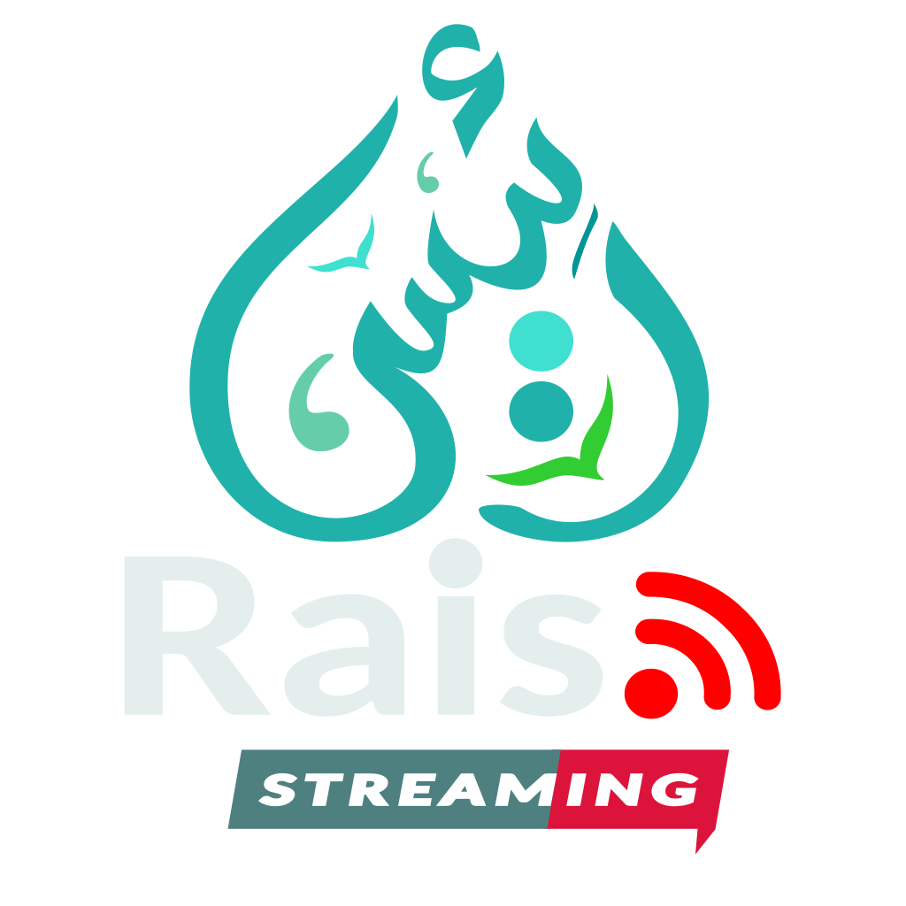

Ketuk tombol putar untuk mendengarkan siaran.
Bagikan...
WhatsApp
Salin tautan
Pasang aplikasi
Buka aplikasi radio
OFF AIR
Radio Islam Sragen

00:00:00
Radio Islam Sragen
Radio
Siaran Langsung
Siap siaran
00:00:00
48 Kbps · 0 KB · streamy1.radioislam.my.id:9210
Izin mikrofon diperlukan untuk siaran.
Izinkan Mic
Mulai Siaran
Soundcard 100%
Geser Sumber
MP3 0%
Belum ada file MP3 dipilih
Pilih MP3
Putar MP3
Monitor
00:00 / 00:00
Mikrofon Aktif
Penguat Mic
100%
Kirim Judul
Pengaturan Server
▾
Address
Port
User
Pass
Bitrate
24 Kbps
32 Kbps
48 Kbps
64 Kbps
96 Kbps
128 Kbps
Nama Radio